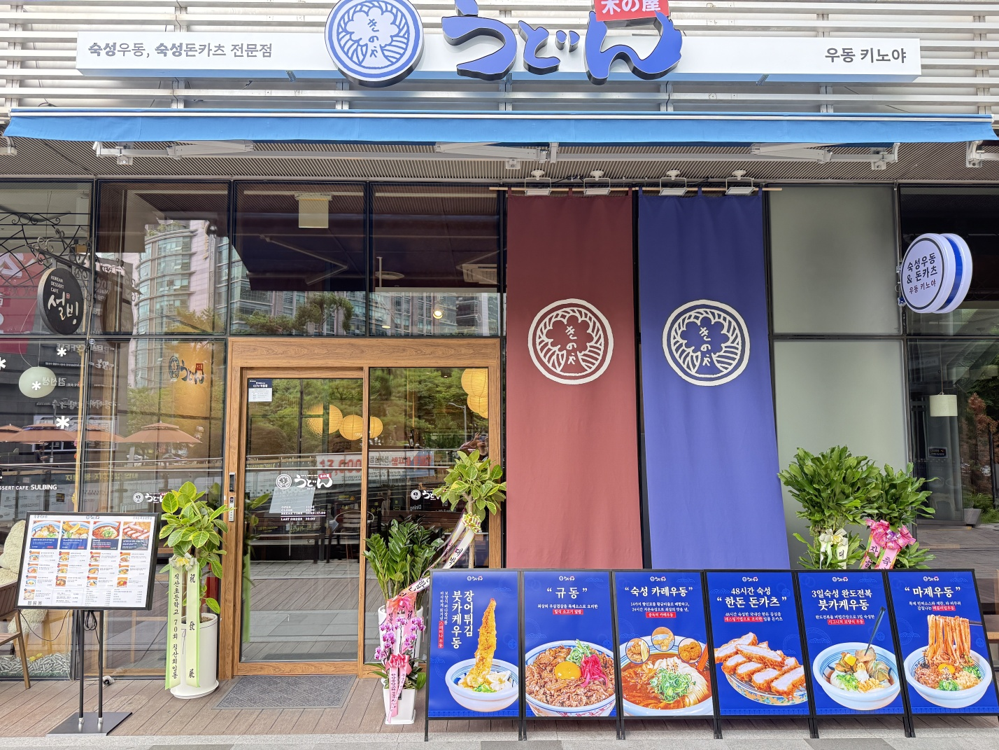

Store · 구로점
우동키노야 구로점
서울특별시 구로구 디지털로 300에 위치한 우동키노야 매장입니다. 영업시간·휴무는 매장 사정에 따라 변경될 수 있으니 방문 전 전화 확인을 권장합니다.
매장 정보는 본사 제공 정보 기준이며, 실제 방문 전 최신 정보를 다시 확인해주세요.
Next Step
서울특별시 구로구 디지털로 300에 위치한 우동키노야 매장입니다. 영업시간·휴무는 매장 사정에 따라 변경될 수 있으니 방문 전 전화 확인을 권장합니다.